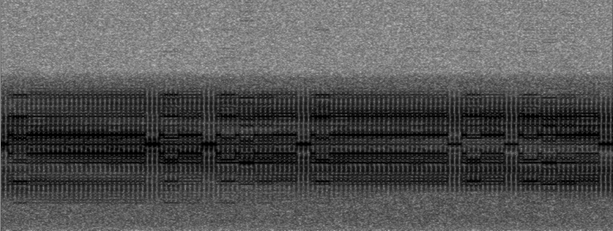

Click here to go back to the main page.
| Name: | Slot Machine (XSL) |
|---|---|
| Frequencies | 4152.5, 4231, 4290.5, 6249.5, 6416.5, 6444.5, 8312.5, 8587.5, 8703 |
| Status | Active |
| Voice | N/A |
| Mode | QPSK |
| Location | Ichihara, Japan |
| Description |
"Slot Machine" is a common nickname for a one-way communication system of the Japanese Maritime Self-Defense Force in Ichihara. Emits 24/7 on a number of frequencies. The modulation utilized is QPSK, at the speed of 1500 bd. Mostly commonly heard is its idling sequence, made out of several repetitive bit patterns - but occasional traffic is passed. |
| Media |
Waterfall image of the Slot Machine (XSL):  Audio sample of the Slot Machine (XSL): Audio sample of the Slot Machine (XSL) in Traffic: |
| Additional Link | More informations can be found at Sigidwiki.com |